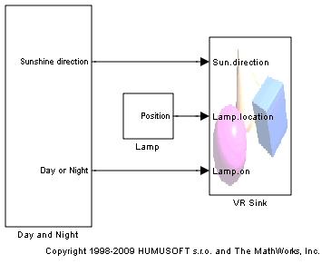
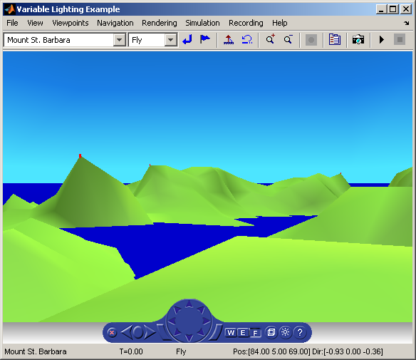

Variable Lighting
vrlights is an example with light sources. In the scene there are Sun (modeled as DirectionalLight) and Lamp (modeled as PointLight) moved around from the Simulink® model, creating the illusion of changes between day and night terrain illumination. In the associated VRML file, several viewpoints are defined that allow you to observe gradual changes in light from various perspectives.
While the effect of moving light sources on the terrain is directly visible, the VRML world background doesn't automatically reflect the current light sources status. Background color needs to be specifically changed depending on the Sun position. Here it is done using a VRMLScript. For details please view the associated VRML file vrlights.wrl in a text editor.
This example can be used for training user navigation and testing the use of navigation zones in various navigation modes.
 